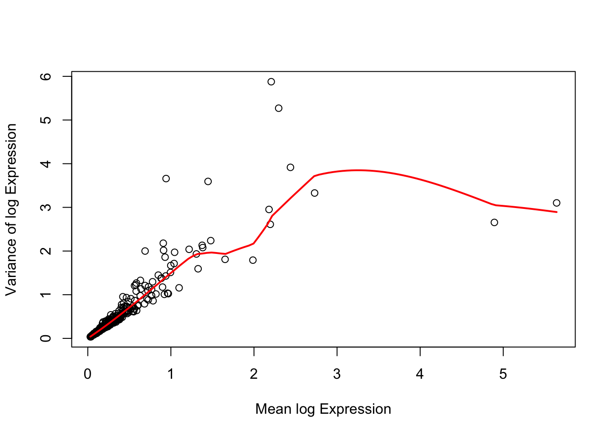
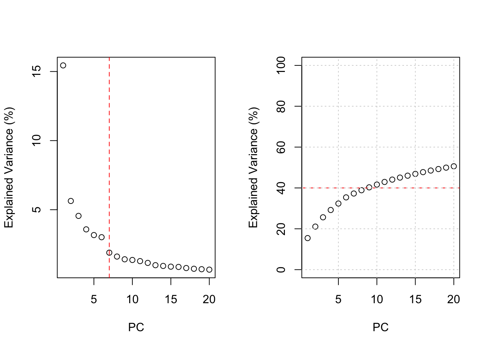
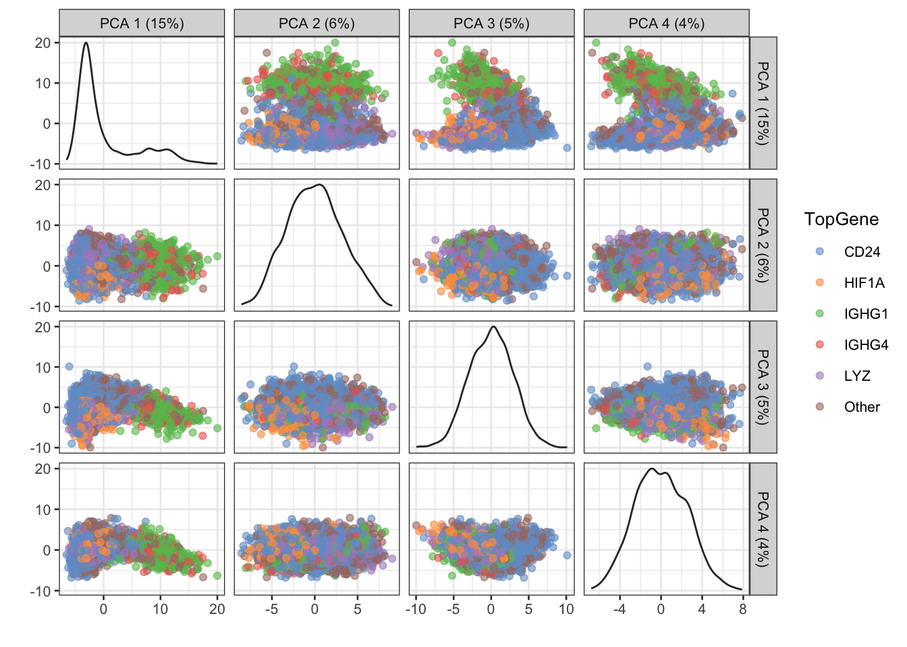
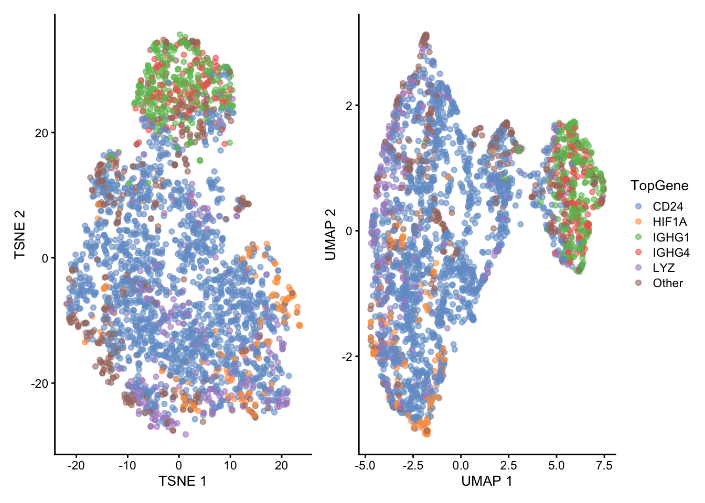
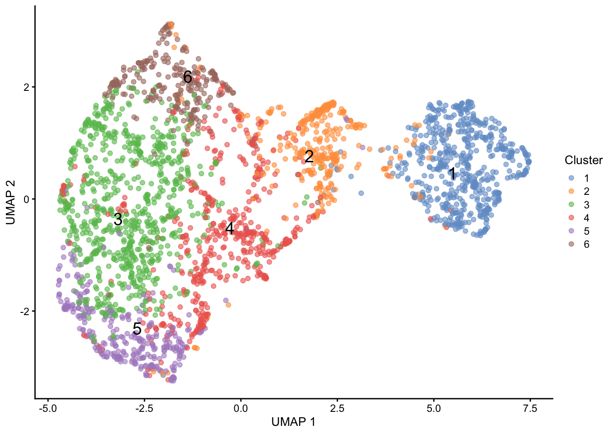
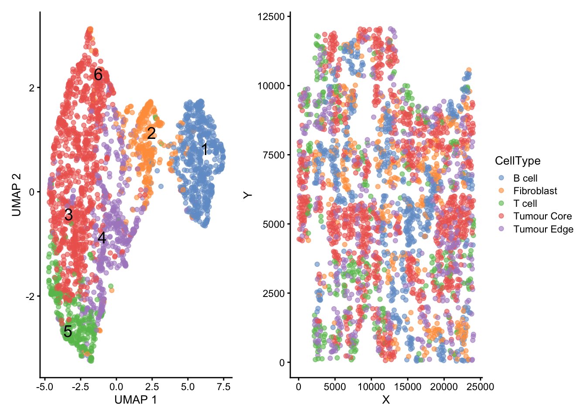
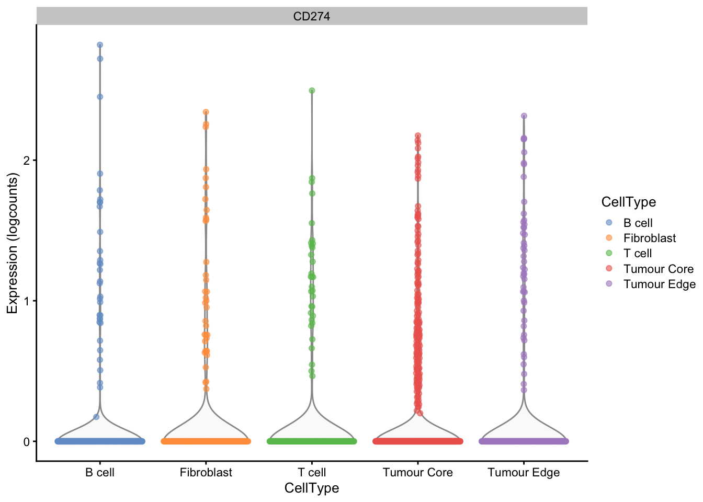

# Import libraries
library(SingleCellExperiment)
library(scran)
library(scater)
library(PCAtools)
library(patchwork)
library(bluster)Breast Cancer Analysis
This analysis aims at predicting whether checkpoint inhibition therapy should be administered to a breast cancer patient based on their genetic expression profile.
Data Preparation
The necessary libraries are imported to set up the environment.
The expression table and the location metadata are read in.
# Read assay
expression_data <- read.csv("data/assay.csv", row.names = 1) |>
as.matrix() |>
t()
# Read colData
location_data <- read.csv("data/location.csv", row.names = 1)A SingleCellExperiment object is constructed from the assay and its corresponding colData.
# Build SCE object
sce <- SingleCellExperiment(assay = list(counts = expression_data),
colData = location_data)
sceclass: SingleCellExperiment
dim: 297 2748
metadata(0):
assays(1): counts
rownames(297): ACTA2 ACTG2 ... ZEB1 ZNF571
rowData names(0):
colnames(2748): 1 2 ... 2747 2748
colData names(2): X Y
reducedDimNames(0):
mainExpName: NULL
altExpNames(0):The experiment includes 2748 cells which express 297 genes.
Normalisation
The counts assay is normalised with the log-norm transformation to make cells comparable and focus on logarithmic changes in expression.
set.seed(100)
# Normalise by cluster library size
clust <- quickCluster(sce)
sce <- computeSumFactors(sce, cluster = clust, min.mean = 0.1)
# Scale and log transform counts
sce <- logNormCounts(sce)Feature Selection
Cells are modelled by their variability to determine whether a few Highly Variable Genes (HVGs) could be selected to represent cells.
# Model gene variation
dec <- modelGeneVar(sce)
fit <- metadata(dec)There are a few genes that show much greater variability than others (Figure 1). In particular, genes above the red line provide a certain extent of biological variance after excluding technical variance (red line). However, we decided to keep all of them in further analyses due to the relatively small size of the experiment, which might have been pre-filtered.
# Visualise model fit to gene variation
plot(fit$mean, fit$var,
xlab = "Mean log Expression",
ylab = "Variance of log Expression")
curve(fit$trend(x), col = "red", add = TRUE, lwd = 2)
Genes are sorted by their variability to explore which genes might be used later to annotate clusters to the correct cell types. The first two, IGHG1 and IGHG4 represent B cell marker genes.
# Order genes by variability
hvg <- getTopHVGs(dec)
hvg [1] "IGHG1" "IGHG4" "FAT1" "IGKC" "FGFR4" "LST1"
[7] "HIF1A" "MAPK3" "TFRC" "FN1" "PTTG1" "S100A8"
[13] "SULF1" "CDKN2A" "FCN1" "KRT19" "HSPG2" "TFF1"
[19] "CD69" "NOTCH1" "CD24" "PECAM1" "KIF23" "ACTA2"
[25] "COL1A2" "MLPH" "C1QA" "CCNB1" "FOXP3" "IGHM"
[31] "FABP7" "CD3G" "GRB7" "ICOS" "COL3A1" "NDC80"
[37] "PTPRC" "TRAC" "CD68" "ACTG2" "FAP" "MYO10"
[43] "SDC1" "CAPN13" "TTC6" "CD14" "CDK6" "HLA.DRB1"
[49] "S100A4" "THY1" "GNG11" "PLVAP" "LTF" "SKAP1"
[55] "LILRB1" "FCRL5" "CD19" "ZNF571" "IL2RA" "ISG20"
[61] "COL1A1" "ANLN" "SPP1" "KRT17" "CD79B" "TFF2"
[67] "CD38" "IL7R" "ADGRL4" "TPM2" "PGR" "CCNE1"
[73] "APOC1" "ICAM1" "EIF3E" "LGALS2" "CD79A" "CTSL"
[79] "FTL" "COL4A2" "CD5" "ITGA6" "CSRP2" "GZMB"
[85] "CD3E" "CD163" "NKG7" "LRP2" "STAT5A" "SLC39A6"
[91] "COBL" "CCL3" "TYMS" "LGMN" "CD2" "CCNE2"
[97] "MZB1" "JUNB" "NUF2" "AHR" "ERBB3" "HLA.DRB5"
[103] "MYB" "FOXC1" "BGN" "HLA.DPA1" "NR3C1" "IL3RA"
[109] "LAG3" "BANK1" "CD96" "TBX21" "MSR1" "APOE"
[115] "PLEK" "CEACAM1" "SPDEF" "CD4" "CENPF" "RAMP2"
[121] "CALCRL" "CCL4" "ALDH1A3" "LUM" "VIM" "MELK"
[127] "CD3D" "UBE2T" Dimensionality Reduction
Currently, cells are characterised by a large number of dimensions (297 genes). To select highly explanatory features and reduce noise, we perform Principal Component Analysis (PCA) on the assay.
# Perform PCA
sce <- runPCA(sce,
assay.type = "logcounts",
ncomp = 20)
# Retrieve percent explained variance
pca.vars <- attr(reducedDim(sce, "PCA"), "percentVar")
# Find elbow
chosen.elbow <- findElbowPoint(pca.vars)
# Find cumulative explained variance
pca.cum.vars <- cumsum(pca.vars)The number of PCs for further analyses was determined by the percentage of explained variance in relation to the number of PCs (Figure 2). The first 7 PCs seem sufficient based on the elbow rule, whereas the first 9 PCs can explain more than 40% of the variance based on cumulative explained variance. Therefore, we reasoned that the first 10 PCs would provide an acceptable tradeoff between dimensionality and explained variance.
par(mfrow = c(1, 2))
# Visualise elbow
plot(pca.vars, xlab = "PC", ylab = "Explained Variance (%)")
abline(v = chosen.elbow, col = "red", lty = 2)
# Visualise cumulative explained variance
plot(pca.cum.vars,
xlab = "PC",
ylab = "Explained Variance (%)",
ylim = c(0, 100))
abline(h = 40, col="red", lty = 2)
grid()
For exploratory purposes, the most expressed gene in every cell was found. Cells whose most expressed gene was different from the top 5 genes across the entire assay were labelled as “Other”.
# Find top expressed gene for every cell
max.idx <- apply(assay(sce, "logcounts"), 2, which.max)
max.genes <- rownames(sce)[max.idx]
# Find top 5 expressed genes across assay
top.genes <- names(sort(table(max.genes), decreasing = TRUE))[seq(5)]
max.genes[!(max.genes %in% top.genes)] <- "Other"
# Store top expressed gene
sce$TopGene <- max.genesThe performance of PCA was roughly assessed by visualising the cells in the first four PCs coloured by their most expressed gene (Figure 3). The first PC seems to encode most of the variance between IGHG1/IGHG4+ cells and other cells in terms of most expressed gene, whereas higher PCs might encode different information.
# Visualise PCA
plotReducedDim(sce, "PCA",
ncomp = 4,
colour_by = "TopGene")
The first 10 PCs are fed to TSNE and UMAP to further identify groups of cells and their relative position.
set.seed(100)
# Perform TSNE on the first 10 PCs
sce <- runTSNE(sce, dimred = "PCA", n_dimred = 10)
# Perform UMAP on the first 10 PCs
sce <- runUMAP(sce, dimred = "PCA", n_dimred = 10)Both TSNE and UMAP could identify the IGHG1/IGHG4+ group of cells previously found in PCA (Figure 4). This is encoded by the second axis in TSNE and the first axis in UMAP, respectively. Compared to PCA, TSNE and UMAP provided a better separation between other groups of cells, such as the HIF1A+, LYZ and other cells.
# Generate TSNE plot
tsne <- plotReducedDim(sce, "TSNE", colour_by = "TopGene")
# Generate UMAP plot
umap <- plotReducedDim(sce, "UMAP", colour_by="TopGene")
# Visualise TSNE and UMAP
tsne + umap +
plot_layout(guides = "collect")
Clustering
Groups of cells with similar expression profiles can be found by clustering. Then, they can be annotated with the most appropriate cell type based on which marker genes they express. Cells were clustered based on the first PCs with a two-step approach involving K-means and network-graph algorithms. The former serves to speed up clustering by finding the initial 1000 centers, while the latter aims to merge and refine the cells to a maximum of 10 clusters. As a result, we obtain 6 clusters of variable size from about 200 to 800 cells.
set.seed(100)
# Cluster cells
kclust <- clusterCells(sce,
# assay.type = "logcounts",
use.dimred = "PCA",
BLUSPARAM = TwoStepParam(first = KmeansParam(centers = 1000),
second = NNGraphParam(k = 10)),
full = TRUE)
# Store clustering results
sce$Cluster <- kclust$cluster
# View cluster counts
tab <- table(sce$Cluster)
knitr::kable(tab, col.names = c("Cluster", "Count"))| Cluster | Count |
|---|---|
| 1 | 568 |
| 2 | 326 |
| 3 | 766 |
| 4 | 511 |
| 5 | 318 |
| 6 | 259 |
The six clusters span different regions of the UMAP space (Figure 5). Some of the clusters, especially cluster 1, match the groups previously defined by most expressed gene. However, it is clear that more complex information is encoded by the clustering than by top gene stratification.
# Visualise UMAP of clustered cells
plotReducedDim(sce, "UMAP",
colour_by = "Cluster",
text_by = "Cluster")
Marker Gene Detection
Marker genes are detected by pairwise comparisons of gene expression between clusters. Then, the average effect sizes across all comparisons are computed with several scores. Here, we use the mean AUC as an estimate to assess the importance of a marker gene for each cluster. For simplicity, only the top 5 marker genes in terms of mean AUC were considered for every cluster.
# Score marker genes by cluster
marker.info <- scoreMarkers(sce, sce$Cluster)
# Find top 5 marker genes for every cluster based on mean AUC score
marker.genes <- lapply(
marker.info,
function(x) rownames(x)[order(x$mean.AUC, decreasing = TRUE)][seq(5)]
)
# View top 5 marker genes by cluster
marker.genes$`1`
[1] "IGHG1" "IGHG4" "FAT1" "IGKC" "FGFR4"
$`2`
[1] "FN1" "HLA.B" "ACTA2" "KIF23" "GNG11"
$`3`
[1] "KRT19" "KRT18" "TFF1" "MYL6" "HSPB1"
$`4`
[1] "CD24" "FOS" "COL3A1" "LYZ" "ZNF571"
$`5`
[1] "SULF1" "HIF1A" "FOXP3" "MLPH" "APOE"
$`6`
[1] "TFRC" "KRT19" "FASN" "TFF1" "KRT18"Cell Type Annotation
Clusters were annotated as follows:
- Cluster 1: B cells
- Cluster 2: Fibroblasts
- Clusters 3 and 6: Tumour Core
- Cluster 4: Tumour Edge
- Cluster 5: T cells with traces of fibroblasts
Cluster 1 is linked to IGHG1 and IGHG4, which are typical of B cells. Cluster 2 represents fibroblasts, as it is associated with fibronectin (FN1), a component of the extracellular matrix, actin (ACTA2) and kinesin (KIF23), essential for intracellular motility, the histocompatibility complex class B (HLA-B). Clusters 3 and 6 are related to KRT18 and KRT19, which are typical of tumour cells. Cluster 4 is connected to CD24 and FOS, two known oncogenes, but also lysozyme (LYZ) produced by macrophages to lyse cells. Thus we labelled cluster 4 as the tumour core, as it might reflect the boarder regions between the the immune response and the tumour. Cluster 5 is characterised by FOXP3, a T cell marker gene, but also by SULF1, expressed by fibroblasts. Thus, this cluster might constitute a hybrid between T cells and fibroblasts.
# Infer cell type manually
cell.types <- c("B cell", "Fibroblast", "Tumour Core", "Tumour Edge", "T cell", "Tumour Core")
# Store cell type
sce$CellType <- sapply(sce$Cluster, function(x) cell.types[x])The annotated cells are shown both as clusters in the UMAP space and in their original space of the tissue in Figure 6.
# Generate UMAP plot
umap <- plotReducedDim(sce, "UMAP", colour_by = "CellType", text_by = "Cluster")
# Generate colData plot
spatial <- plotColData(sce, "Y", "X", colour_by = "CellType")
# Visualise UMAP and colData plots
umap + spatial +
plot_layout(guides = "collect")
Discussion
Question 1
Based on our manual annotation, more than 30% of the assay consists of B or T cells. Thus, the percentage of immune cells likely surpasses 10% even if some margin of error is considered.
# Compute percentage of cell types
tab <- table(sce$CellType) / ncol(sce) * 100
knitr::kable(tab,
digits = 2,
col.names = c("Cell Type", "Abundance (%)"))| Cell Type | Abundance (%) |
|---|---|
| B cell | 20.67 |
| Fibroblast | 11.86 |
| T cell | 11.57 |
| Tumour Core | 37.30 |
| Tumour Edge | 18.60 |
Question 2
B and T cells appear to intermix with the tumour cells to a large extent. The spatial distribution illustrated by Fig Figure 6 suggests that immune cells attempt to infiltrate the small agglomerations formed by the tumour cells, which reflects a positive response of the immune system against the tumour.
Question 3
More than 10% of the cells in the assay express at least 1 copy of the PD-L1 gene, which corresponds to a non-null log-count as computed below. Also within only T cells, at least 10% of them express the PD-L1 gene.
# Compute percentage of PD-L1+ cells
tab1 <- table(assay(sce, "logcounts")["CD274", ] != 0) / ncol(sce) * 100
# Compute percentage of PD-L1+ T cells
sce.tcell <- sce[ , sce$CellType == "T cell"]
tab2 <- table(assay(sce.tcell, "logcounts")["CD274", ] != 0) /
sum(ncol(sce.tcell)) * 100
# Combine tables
tab <- rbind(tab1, tab2)
rownames(tab) <- c("All Cells", "T Cells")
colnames(tab) <- c("PD-L1-", "PD-L1+")
# View results
knitr::kable(tab, digits = 2)| PD-L1- | PD-L1+ | |
|---|---|---|
| All Cells | 88.54 | 11.46 |
| T Cells | 89.94 | 10.06 |
Figure 7 illustrates the distribution of PD-L1 expression across different cell types.
# Visualise expression of PD-L1
plotExpression(sce, features = "CD274", x = "CellType", colour_by = "CellType")
Conclusion
The current study aimed to annotate cells from a tissue of breast cancer analysed with scRNA-seq in order to predict the patient’s response to checkpoint inhibitory therapy. Overall, the analyses provided all the indicators for a positive response: 1) immune cells make up about 30% of the tissue, 2) they are intermixed with the tumour and 3) about 10% of all cells (as well as T cells) express the PD-L1 gene. Taken altogether, the patient is expected to respond well to checkpoint inhibitory therapy.